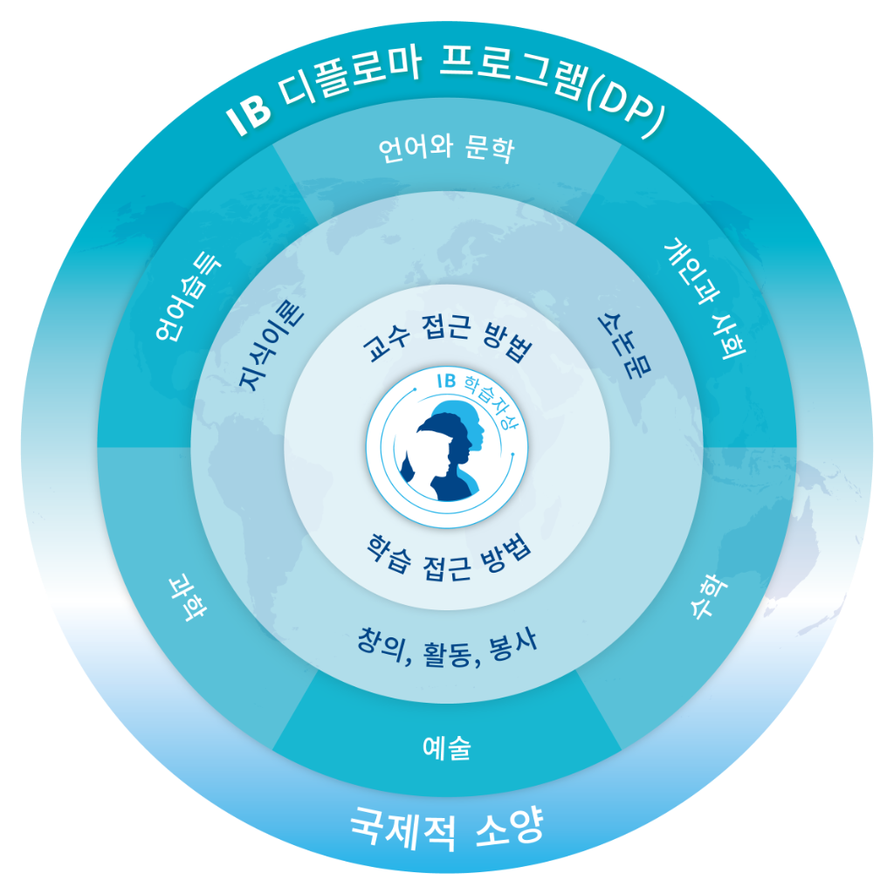

영상으로 만나는 IB
대구서부고 IB, 영상으로 먼저 만나보세요
보고 싶은 영상의 재생 버튼을 눌러주세요.
대구서부고 IB 홍보영상
유튜브에서 보기 ↗IB 소개
국제 바칼로레아(IB)란?
스위스 제네바 본부를 둔 비영리 교육재단 IB본부(International Baccalaureate Organization)에서 개발·운영하는 국제 공인 교육과정입니다. 세계 162개국 6,044개 학교(2025, 12월 기준)에서 운영 중입니다.
PYP
초등학교
전인적 성장과 자신·타인의 존중 추구
MYP
중학교
학습과 실생활 연계 도전적 과제 해결
DP
고등학교
지적·정서·윤리·학문적 성장 추구
DP 소개
대구서부고 IB 디플로마 프로그램
본교는 지역 사회에 긍정적인 변화를 도모하고 세계를 함께 지켜나갈 책임감과 국제적 소양을 갖춘 인재를 양성하기 위해 노력합니다.
창의
인성
실력
국제적 소양
IB DP 운영 현황
| 구분 | 2026년 | 2027년 | 2028년 | 2029년 |
|---|---|---|---|---|
| DP Year 2 | 2기(2024년 입학생) | 3기(2025년 입학생) | 4기(2026년 입학생) | 5기(2027년 입학생) |
| DP Year 1 | 3기(2025년 입학생) | 4기(2026년 입학생) | 5기(2027년 입학생) | 6기(2028년 입학생) |
| Pre-DP | 4기(2026년 입학생) | 5기(2027년 입학생) | 6기(2028년 입학생) | 7기(2029년 입학생) |
지원 방법
선발 구분
IB 운영 학교
지원 대상
대구광역시 소재 중학교 졸업 예정자
모집 학급 수
2학급
IB 학습자상
IB
학습자상
학습자상
탐구하는
사람
사람
사고하는
사람
사람
소통하는
사람
사람
도전하는
사람
사람
원칙을
지키는 사람
지키는 사람
지식이
풍부한 사람
풍부한 사람
배려하는
사람
사람
열린 마음을
지닌 사람
지닌 사람
균형 잡힌
사람
사람
성찰하는
사람
사람
교육과정
IB 교육과정 들여다보기

© International Baccalaureate Organization 2024.
과목 운영
| 교과군 | 이수 언어 | 과목명 | 개설 수준 |
|---|---|---|---|
| Group 1 | 한국어 | IB 언어와 문학 I, II, III, IV | HL |
| Group 2 | 영어 | IB 영어 I, II, III, IV | SL/HL |
| Group 3 | 한국어 | IB 역사 I, II, III, IV | SL/HL |
| Group 4 | 한국어 | IB 생명과학 I, II, III, IV | SL/HL |
| 한국어 | IB 화학 I, II, III, IV | SL/HL | |
| 영어 | IB 물리학 I, II, III, IV | SL | |
| Group 5 | 한국어 | IB 수학 분석과 접근 I, II, III, IV | SL/HL |
| Group 6 | 영어 | IB 영어 연극 이론과 창작 I, II, III, IV | SL |
평가 구조 (총 45점 만점)
7점
각 과목 만점 × 6과목
+
3점
TOK + EE 보너스 점수
+
P/F
CAS (합·불)
=
45점
최고 총점
각 과목 소개
다양한 텍스트를 분석·평가하는 역량을 개발하고, 듣기·말하기·읽기·쓰기·관찰하기·발표하기와 관련된 역량을 개발합니다. 심화수준(HL)을 선택합니다.
📚 주요 작품: 콜슨 화이트헤드 언더그라운드 레일로드, 한강 작별하지 않는다, 가즈오 이시구로 나를 보내지 마 등
상호작용을 통하여 의사소통 능력을 기르고 문화적 포용성을 체득하는 언어 학습 과정입니다. 표준수준(SL)과 심화수준(HL)을 선택할 수 있습니다.
📚 주요 작품: George Orwell의 Animal Farm, Mark Haddon의 The Curious Incident of the Dog in the Night-Time 등
세계대전 전후 시기의 역사를 집중적으로 탐구합니다. 작은 역사가가 되어 다양한 관점과 의견을 접하며 균형 잡힌 탐구를 진행합니다.
탐구 중심의 자기주도적 과학 탐구 능력과 과학적 사고력을 기릅니다. 학생들이 스스로 연구 주제를 선정하고 실험을 설계·수행합니다.
🔬 특징: 자기 주도적 연구 보고서 작성 (3,000단어 이내), MBL 장치 활용 실험, 공동 탐구 과제 수행
논리적 추론과 엄밀한 증명을 중시하며, 수학적 개념과 원리 탐구를 통해 사고의 정밀성과 창의성을 함께 키웁니다.
영어로 수업과 평가가 진행되며, 시대와 문화에 따라 다양한 형태로 존재하는 연극의 예술성과 역동성을 탐구합니다. 창의적인 시각과 실기 능력을 기릅니다.
핵심과정 (Core)
IB DP 필수 핵심과정
IB 디플로마를 받기 위해 반드시 이수해야 하는 3가지 핵심 과정입니다.
지식이론 (TOK)
Theory of Knowledge
지식의 본질에 대해 탐구하며 비판적 사고력을 기릅니다.
- 100시간 이상 이수
- 전시회 (내부평가) 33%
- 에세이 1,600단어 (외부평가) 67%
핵심 질문
- "우리가 배우는 지식은 무엇이며, 어떻게 형성되는가?"
- "지식(knowledge), 믿음(belief), 의견(opinion)은 어떻게 다른가?"
소논문 (EE)
Extended Essay
과목 중 하나의 주제를 선택하여 4,000단어 분량의 소논문을 심층 연구합니다.
- 최소 40시간 소요
- 지도교사와 성찰 세션 3회 필수
- 학문적 진실성 교육 병행
DP 1년 3~6월
지도교사 배정
DP 1년 7~8월
주제 선정
DP 2년 1~6월
소논문 작성
DP 2년 7~9월
소논문 제출
창의·활동·봉사 (CAS)
Creativity, Activity, Service
학교 밖에서의 균형 잡힌 활동을 통해 학문 이외의 영역에서 성장합니다.
- 최소 18개월 이상 지속
- 7가지 학습 성과 달성
- CAS 포트폴리오 작성 필수
C 창의성
A 활동
S 봉사
🌏 SDGs 실천 사례: SDGs magazine makers 프로젝트 — 지속 가능 발전 목표에 관한 잡지 제작 프로젝트를 통해 지역 사회 문제 해결에 기여
DP 이수 시간
| 구분 | 이수 시간 | 학점 환산 기준 |
|---|---|---|
| 표준수준(SL) | 150시간 | 12학점 이상 (학기당 평균 약 3학점) |
| 심화수준(HL) | 240시간 | 18학점 이상 (학기당 평균 약 4.5학점) |
| 지식이론(TOK) | 100시간 | 8학점 이상 |
| 소논문(EE) | 40시간 | 개인 연구로 진행 |
| CAS | 18개월 이상 | 최소 18개월 이상 지속 |
준비과정
IB Pre-DP 프로그램 운영
IB 디플로마 프로그램(DP)의 성공적인 이수를 위한 역량 강화를 위해 IB 준비과정을 운영합니다.
방과후 프로그램
당해 IB Pre-DP 학생 및 1학년 전담 방과후 과목·학습 관리 및 준비 프로그램 운영
특강 프로그램
당해 IB Pre-DP 학생 및 1~2학년 관심 있는 합동 특강 운영
멘토링 프로그램
당해 IB Pre-DP 학생 및 1기 특정 학생들에게 지식 지도 및 전문·학과 지도 프로그램 운영
국제적 소양 강화 프로그램
당해 IB Pre-DP 학생 및 1~3학년 모든 학생을 위한 언어·국제이해를 위한 다양한 교육 프로그램 운영
DP 운영
IB DP 운영 지원 프로그램
각종 전시회
지식이론(TOK), 창의활동봉사(CAS) 등 IB 교육 활동의 결과물로 전시회 운영
탐구 프로젝트
개인별 탐구 질문을 설정하고 실험 동을 통해 전달되면서 자신의 사고와 지식을 시각적으로 표현하는 활동 운영
IB 월드스쿨 수업·평가 세미나
교내 및 교외 교사와의 공개수업 및 수업 연계 평가 세미나 정기적으로 운영
교육환경
다양하고 유연한 학습 지원 교육 공간
IB 수업에서 필요한 다양한 학습 활동을 지원하는 최첨단 교육 공간을 운영합니다.
발표·토론·협업 공간
하늬글샘 도서관
다목적 수업 공간
소규모 학습실
미래교실 (스마트 블렌디드)
계단형 강의실
연극실
학년별 라운지 (1·2·3학년)
학교 역사
대구서부고 연혁
1997
대구서부고등학교 설립 인가 및 제1회 입학식
2021
IB 디플로마 프로그램 후보학교 지정
2023
🎉 IB WORLD SCHOOL 공식 인증 획득
2024
IB WORLD SCHOOL 운영, 학점제형 공간 활용 우수학교 교육부 장관 표창
2026
제9대 안기주 교장 취임, IB DP 1기 학생 졸업
🏫 제30회 입학식 (남 116명, 여 67명), IB DP 4기 학생 입학
🏫 제30회 입학식 (남 116명, 여 67명), IB DP 4기 학생 입학
대구서부고등학교는
IB 월드스쿨입니다
생생한 이야기
학생·교사 목소리
"IB 생명과학을 수강하면서 지식에 대한 깊은 호기심을 키우고, 모르는 것이 있을 때 더 많은 答을 찾아야 한다는 것을 체험했습니다. 이러한 과정을 통해 IB 교육과정이 추구하는 핵심 가치인 '탐구하는 사람(Inquirer)'으로 성장할 수 있었습니다."
"IB 수학과 함께 수업은 단순히 합산만을 하는 일반적인 교육과정과 달리, 탐구하는 사고력을 요구하는 내용이 많고 친구들과 선생님들 사이의 소통과 협력을 통해 매우 유익하게 수업을 들을 수 있었습니다."
"세계적으로 공증된 IB 평가는 학교 내신 평가의 기준 역할을 하여 학교 수업과 평가의 질을 높이는 교육을 실현합니다. 학생들이 자기 성장의 목표를 바탕으로 정확한 피드백을 제공하며 학생의 성장을 더 효과적으로 지원합니다."
"IB 프로그램은 단편적인 지식 습득을 넘어 비판적 사고와 탐구 능력을 키우는 통합적 교육입니다. 학생들이 서로 경쟁하기보다 스스로 도전을 즐기며 잠재력을 극대화할 수 있도록, 디플로마 프로그램을 통해 자기주도적인 학습자로 성장할 수 있도록 최선을 다하겠습니다."